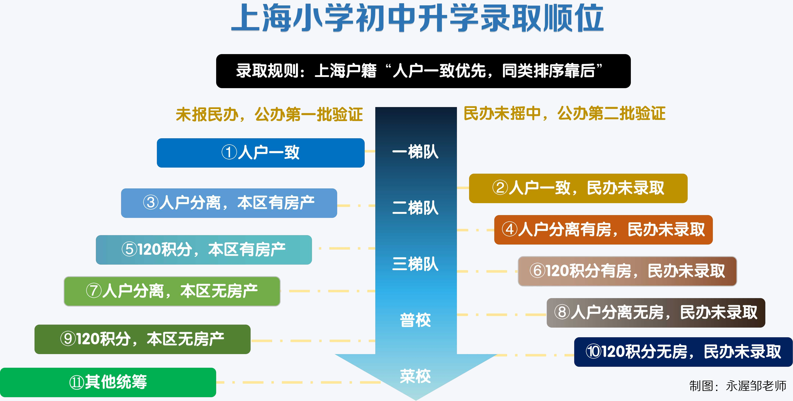
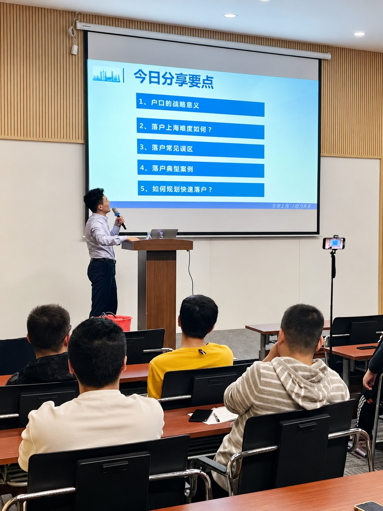
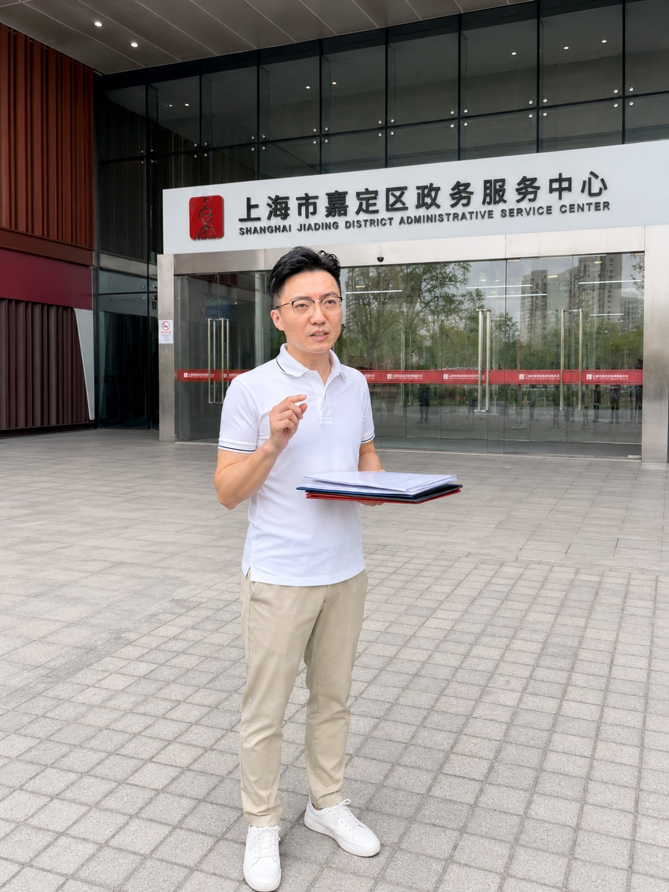
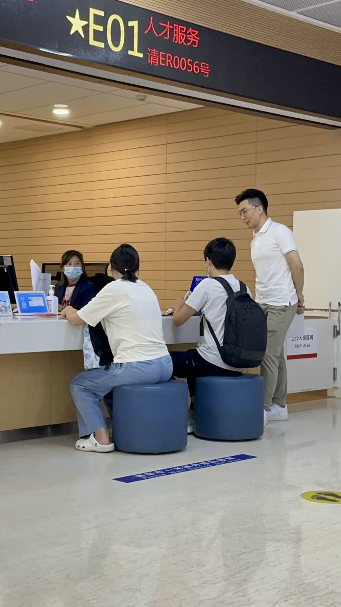
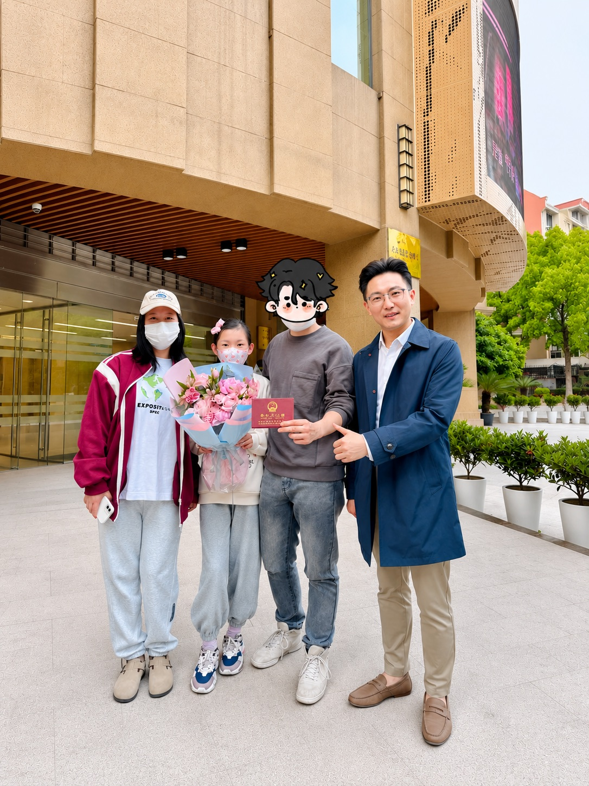

- 落户不是目的，只是手段。
- 家长的选择，大于孩子的努力。
- 解决问题的最好办法是不让问题发生。
永渥新生：希望每一个和邹老师链接的人，都能在上海过上「永」远幸福优「渥」的新生活。
上海落户升学一站式服务
三大主流落户方案，总有一款适合你。
人才引进落户
✅ 适合人群
既看个人背景又看公司资质，需要重点机构资质、看重岗位、专业、履历匹配性。
适合有学历或高级职称的企业主、创业者、超级个体，网红、全职宝妈等社保灵活人群。
❌ 常见问题
- 公司资质已过期
- 紧缺急需性不够
- 经营真实性质疑
- 档案背景有问题
居转户落户
✅ 适合人群
主要看个人忠诚度和贡献度，周期长但对企业资质要求低。
适合在上海稳定工作，有居住证，社税规范缴纳的上班族。
❌ 常见问题
- 居住证中断
- 社税不规范
- 基数有问题
- 职称不匹配
留学生落户
✅ 适合人群
主要看学校排名和境外时长，对企业资质要求低。
适合2年内回国来沪发展，前置学历规范的留学生。
❌ 常见问题
- 境外时长不合要求
- 前置学历有断档
- 社税不规范记录
- 海外相关材料缺失

上海教育规划
上海升学择校，和落户一同规划。
对很多家庭来说，落户的首要目的不是拿一个户口本，而是让孩子顺利入学、转学、升学，进入更好的学校；顺利参加中高考，享受上海教育红利。
永渥新生团队基于多年学区规划经验，会把上海不同升学路径的资格要求，户籍年限要求和落户方案的时间节点放在一起考量，避免由于不熟悉升学政策要求，导致落户成功却没能实现预期教育目标。
永渥邹老师，不只是出镜的IP，也是公司老板，更是落户交付结果的负责人。
邹老师，四川宜宾人，2004年来沪上大学，上海交大硕士毕业、工作、定居并落户上海。
曾在百亿私募VC创投从业6年，2018年离开金融圈创业，机缘巧合开始从事上海落户、升学规划服务。
熟悉上海小初高升学政策，精通上海落户解决方案，累计服务全国各地超过1000家庭上海落户升学。
全网少见精通业务，亲自在一线把关辅导的老板，并将投行工作标准引入落户升学服务，坚持“结果导向”一站式精品交付。




投行标准精品交付
从需求梳理到方案定制，从过程管理到审核应对全程跟踪。
-
01
需求梳理
“过来人”身份帮忙梳理落户真正目的，教育、养老、身份不同需求方案不同。
-
02
问题诊断
收集学历、婚育、履历、档案等多维度背景资料，按审核标准提前排查问题。
-
03
方案定制
结合背景优劣势，落户目的以及上海升学和退休政策要求，一对一定制最优方案。
-
04
过程把关
严格执行既定方案并定期检查，根据政策变化动态调整方案，确保符合审核要求。
-
05
申报辅导
利用丰富的案例经验和资源，辅导申请人高质量准备申请材料，不走弯路不踩坑。
-
06
审核应对
提供落户审核期间的反馈指导，尤其是意外状况的有效处理，保障顺利落户上海。
-
07
后续服务
持续提供落户审核通过后，身份证户口本办理辅导，以及升学转学插班购房建议。
真实案例｜留学生落户
QS前50留学生35天落户上海
- 学历背景：26岁安徽女生，多伦多大学本硕，QS前50。
- 海外经历：高中起留学近10年，已取得加拿大永居身份。
- 家庭目标：父母希望趁政策窗口，提前锁定上海身份。
- 时间窗口：无上海工作与居住地，春节回国窗口快速落户。
- 材料风险：无国内档案，旧护照、成绩单和身份材料缺失。
35天
线上提交至审核通过
62天
从入职到批复全流程
6项
关键风险提前处理
35天极速落户关键交付动作
- 回国前先排雷：核查身份、学历、档案、单位资质和申报窗口。
- 无档案先建档：先补建国内档案，再进入正式申报节奏。
- 单位端同步辅导：辅导 HR 开通资质，处理系统和 CA 签章。
- 材料包提前预审：按审核口径预审申请表、附件和原件。
- 审核反馈当天处理：快速判断原因，补充信息并重新提交。
- 陪跑到结果落地：持续跟进批复、准迁、户口本和证件办理。
真实案例｜人才引进落户
本科人才引进7个月落户上海
- 客户画像：本科江苏宝爸，上海3000人软件企业技术岗。
- 家庭目标：女儿小学3年级，提前为小升初转学落户上海。
- 原路风险：原单位资质一流，但落户排队遥遥无期不能等。
- 方案选择：夫妻高频咨询2个多月，决定离职换单位落户。
- 交付结果：入职新公司7个月后提交申请，65天审核通过。
65天
线上提交至审批通过
7个月
从入职到落户公示
4项
关键卡点专项处理
7个月人才引进速关键交付动作
- 升学节点先倒推：排查孩子小升初时间，原单位等落户风险极大。
- 路径重选不硬等：放弃遥遥无期排队，离职转向配合度更高单位。
- 单位社保先衔接：同步处理离职入职、社税衔接，资质排查工作。
- 材料辅导提前审：围绕学历、履历、婚育、档案等材料提前预审。
- 退回问题及时补：审核反馈户口本盖章异常后快速准确指导解决。
- 落户后继续陪跑：辅导准迁、实有人口、户口本和后续入学衔接。
真实案例｜居转户落户
提前3年委托居转户，意外不断
- 50岁杭州客户创业近 20 年，多地多家公司社税经历复杂。
- HR不专业导致社税不规范、基数误判，白交了2年社保。
- 2021年底咨询排查诊断后，重新确定7年2倍居转户路径。
- 全程各种状况，2025年5月提交申报81天审批通过并公示。
3.5年
提前签约把关全程
2倍
常规居转户路径
3项
社税档案履历卡点
3.5年全程把关背后的交付动作
- 社税背景先体检：排查创业期间多段社税重复和基数误设浪费2年。
- 过程把关纠重税：定期把关发现财务异地报税，第一时间处理纠错。
- 申报材料提前审：按审核口径梳理学历、履历、社税和档案闭环。
- 档案遗失先补齐：调档发现档案全遗失，从高中到硕士补档归档。
- 审核节点持续跟：27年复杂工作履历多处错误，全权授权逐一解决。
- 过关斩将审核过：3.5年陪跑N个问题及时处理，81天审核通过。
加微赠送1V1方案咨询
扫码添加邹老师，免费安排一次落户升学咨询
扫码添加邹老师
告知你的最高学历、居住证年限、孩子年级、社保基数等信息，我们会从方案、周期、成本、风险多个维度为你综合判断最佳方案。
谁更需要添加微信咨询
- 喜欢上海想来定居生活退休养老的，计划落户上海不清楚方案怕花冤枉钱的；
- 重视子女教育认可上海高考红利，想转学不清楚政策，没有好学校名额的家长；
- 回国两年内留学生、高学历或高职称人才、需要快速全家落户的企业主与高管。